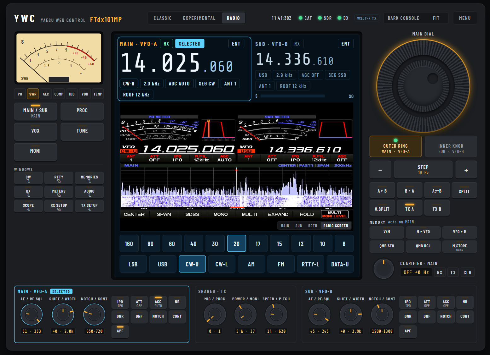

Browser-based CAT control software for Yaesu HF transceivers. Designed for local and remote station operation using any modern web browser.

Browser-based control software for the Icom IC-7300 and IC-7300MK2 transceivers.
Add a screenshot here when available.
Amateur radio operator and software developer based in Scotland. Specialising in browser-based radio control systems, remote station operation and amateur radio software development.